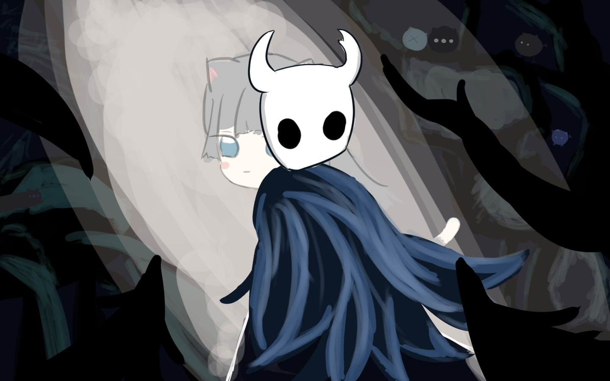
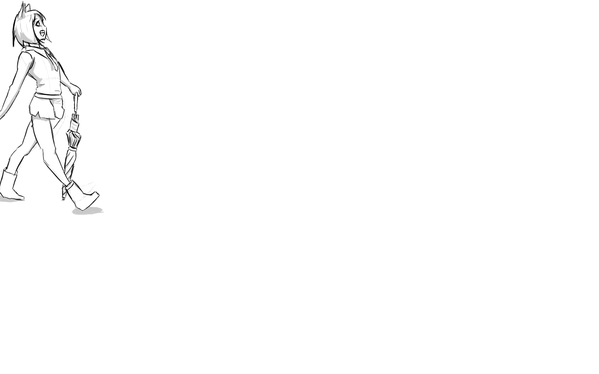

BUBBLE SORT
氣泡排序：重複比較相鄰兩個元素，順序錯誤就交換，較大的值像氣泡一樣逐輪浮到尾端。時間複雜度 O(n²)。
Portfolio Timeline
在寂靜的夜晚，變個魔法般的魔術(都是黑歷史阿!!!別看);
作品集
氣泡排序：重複比較相鄰兩個元素，順序錯誤就交換，較大的值像氣泡一樣逐輪浮到尾端。時間複雜度 O(n²)。
選擇排序：每一輪從未排序區段中找出最小值，放到已排序區的尾端，逐步完成排序。時間複雜度 O(n²)。
插入排序：把每個元素往前插入到已排序區段的正確位置，就像整理手中的撲克牌一樣。時間複雜度 O(n²)。
作品集
Tips.找朋友的名子來練習製作成Sing動畫!
Tips.AI中找字型來練習Sing動畫
Tips.以前看書自學的，現在已經忘光了
Tips.一樣都忘光光lmao
作品集
Tips.效果好像用太多了有點暈，下次加少點
Tips.剪成30FPS了，下次記得不要先把音樂拉進去
Tips.蹦蹦蹦
Tips.純幹片一個
作品集

Tips.3D動畫的期末作業，畫得很開心但老師給的分數不怎麼高sad

Tips.自己畫的nacho!但是不敢po出來只好放在個人網站了

Tips.原本是打算每天到學校或一個動作的，結果只畫了一個...
作品集
學校作業hhh